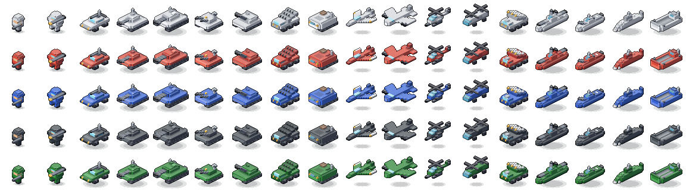
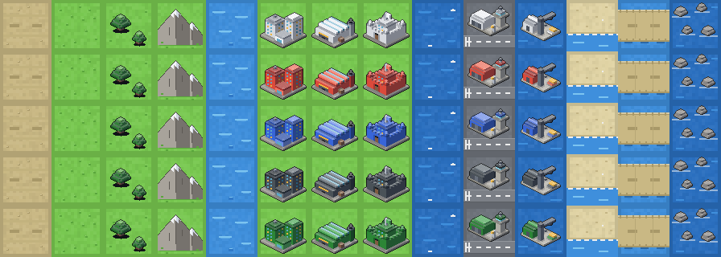
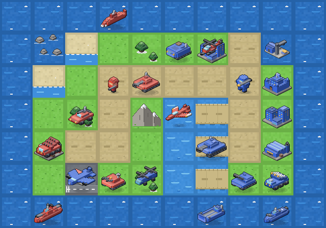

sprite_generator.py on branch
deterministic-atlas: the complete unit and terrain atlases for
grid_commanders, rendered as authored isometric-voxel models with zero randomness.
Annotate any sprite, tile, or decision you want changed.make tiles
(ImageMagick + pack sprites).| File | Contract | Consumed by |
|---|---|---|
| out/units_atlas.png | 1152x320 RGBA — 18 unit columns in atlas_col order x 5 faction rows | assets/tiles/units_atlas.png |
| out/terrain_atlas.png | 896x320 RGB — 14 terrain columns x 5 rows; properties tinted per row | assets/tiles/terrain_atlas.png |
| out/units/<id>_<team>.png | 90 cells, 64x64 RGBA | tools/paste_unit_sprites.gd |
| out/iso_buildings/<id>_<team>.png | 25 property-building cells, 64x64 RGBA | assets/sprites/iso_buildings |
| out/preview_*.png | review sheets + authored demo map | humans |
CommanderVisuals; rows mirror SideIdentity
battle_style.
generate_tiles.gd's palette
and the darkened-edge grid convention; property tiles show all five tinted rows.
assets/sprites/iso_buildings — the same models the terrain tiles compose, shown here
on their own so the silhouettes are inspectable.
make tiles currently rebuilds both atlases
from its own pipeline and would silently overwrite anything installed.--install, commit the two PNGs in the
game repo, delete the ground / sprites / unit-sprites / unit-placeholders steps
from make tiles.assets/sprites/… and let the existing compositor keep assembling atlases.make tiles with
sprite_generator.py --install (path configurable), keep the game's
import step.Installing atlases today and later running make tiles in the game repo reverts
them to pack art. Mitigation: adopt C (or A with the Make steps deleted) in the same change.
Pixels are deterministic forever; the exact bytes could shift on a Pillow major upgrade.
If CI ever asserts atlas hashes, pin pillow in this repo's requirements.
On screen at 1x the 64px cells sample 4:1 nearest, softening 2px detail. Grounds were authored at ≥4px granularity for this; units carry 2px detail exactly like the shipped pack already did, so nothing regresses — but battle-zoom is where the new detail pays off.
Every sprite is one small model function now. Annotate the card above (shape, weapon, stance, color balance) and it's a targeted edit.
Kept the pack's white/grey so neutral never reads as a team. Alternative: the UI's slate-grey neutral theme. Preference?
Air units carry their detached drop shadow inside the cell, like the shipped art. If the game ever animates altitude, shadows should move to a separate layer instead.
.venv/bin/python sprite_generator.py · iterate on one sprite:
--only tank,city --team verdant --zoom 8 · install into the game:
--install ../grid_commanders